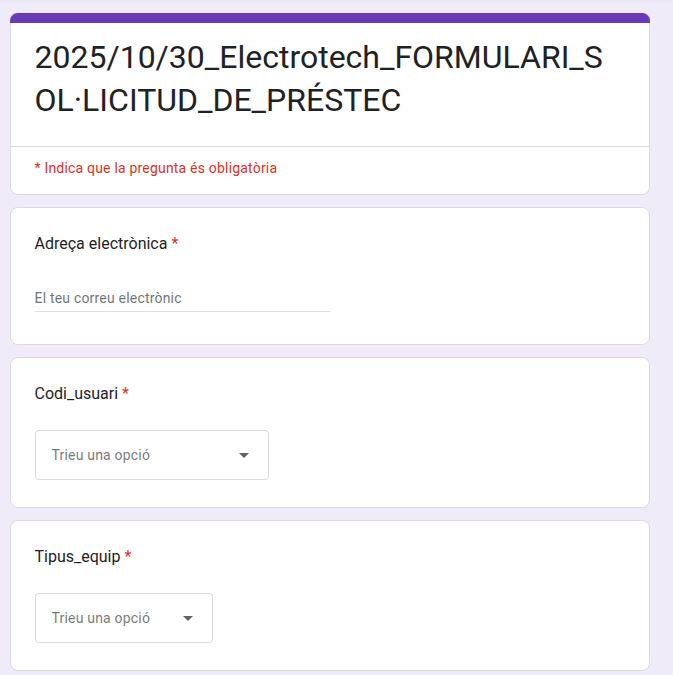

1. Introducció al sistema
Aquest manual explica el funcionament del nou sistema de gestió d'equips TIC, dissenyat per facilitar la sol·licitud i el seguiment dels dispositius a ElectroTech
Visió general de funcionalitats
El sistema permet sol·licitar equips, gestionar retorns, notificar avaries i consultar l'estat dels equips en temps real. És d'ús obligatori per a tot el personal d'ElectroTech que necessiti un equip informàtic prestat.
2. Guia de préstecs
Com sol·licitar un equip
- Omple el formulari de sol·licitud. 
- Espera l'aprovació automàtica del sistema.
- Recull l'equip assignat al magatzem.
- Retorna'l abans de la data límit.
Com retornar equips
- Omple el formulari de retornada.
- Indica l'estat de l'equip honestament.
- Lliura l'equip al magatzem.
Límits i restriccions: Només es permeten 2 equips simultàniament.
3. Guia d'avaries
Com reportar un problema
- Identifica el codi de l'equip (etiqueta adhesiva).
- Omple el formulari descrivint el problema.
- El departament IT revisarà el cas.
- Rebràs informació sobre la reparació.
Seguiment de reparacions
En el GoogleSheets en REPARACIONS surt el estat de la reparació del dispositiu.
4. Dashboard (Per David Martín)
Aquesta secció és específica per a usuaris amb permisos de gestió.
Com interpretar els KPIs
Els indicadors clau de rendiment (KPIs) mostren la rotació d'equips i la mitjana de temps de reparació. Un KPI alt de rotació indica un ús eficient dels recursos.
Ús de la pestanya REPARACIONS
La pestanya 'REPARACIONS' permet veure quins equips estan actualment en reparacio, assignar tècnics i canviar l'estat d'un tiquet de reparació. Això és clau per prendre decisions sobre la compra de nous equips o l'acceleració de reparacions.
5. Manteniment del sistema
Com afegir nous equips
Omplint al GoogleSheets a l'apartat de Inventari_General.
Actualització de dades i resolució de problemes comuns
Les dades s'actualitzen automàticament. Per a problemes de sincronització, contacteu directament amb David Martín.
Preguntes Freqüents (FAQs)
Quants equips puc tenir simultàniament?
Màxim 2 equips en préstec simultàniament.
Què faig si necessito més temps?
Contacta amb (david.martin@electrotech.cat) per sol·licitar extensió.
Com sé si un equip està disponible?
El sistema valida automàticament la disponibilitat quan sol·licites l'equip.
Què passa si retorno un equip avariat?
Has de indicar el seu estat al formulari per posar que esta avariat.
Contacte
- Responsable IT: David Martín
- Email: david.martin@electrotech.cat
- Telèfon intern: Ext. 301